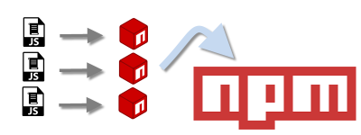
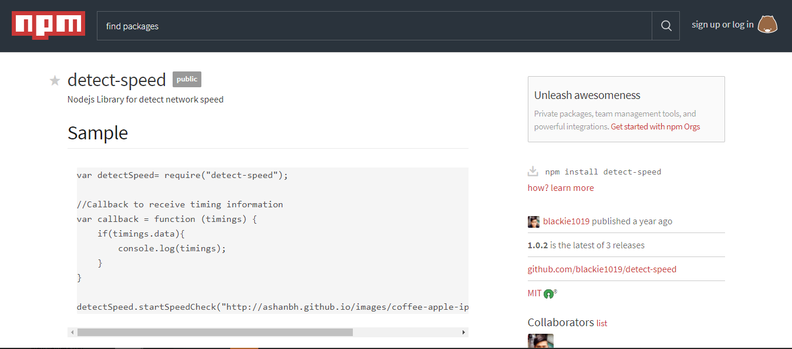
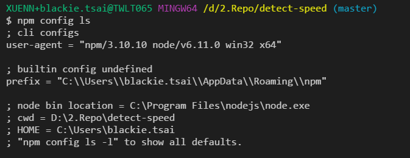
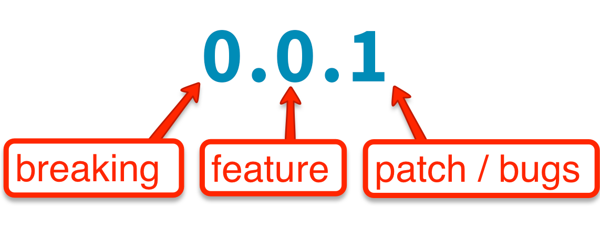

介紹一下如何自行建立透過 npm 建立自己的 js 類別庫，解除開發與部屬的相依性

過往在開發前端時，較少有模組化拆分的概念，隨著 npm 與 module 概念越來越普遍，透過 npm registry 來幫我們解決相異性管理則是可以大大加速開發與部屬的時間。
此範例於 npm 註冊的類別庫detect-speed ，原始碼
Hands on push package to npm registry
Prepare Self Library
首先我們先建立一個類別庫
設定 npm 預設設定:
npm set init-author-name 'Your name' npm set init-author-email 'Your email' npm set init-author-url 'http://yourdomain.com' npm set init-license 'MIT'建立一新資料夾後初始化當前專案
mkdir detect-speed npm init建立主程式 index.js ，如需模組化將需額外程式碼封裝成類別可供載入(參考最下面註解片段)。
```js (function () { var http = require('http'); var url = require("url"); //Speed definitions derived from ... //@http://kenstechtips.com/index.php/download-speeds-2g-3g-and-4g-actual-meaning var detectSpeed = {} var speedClasses = [{ name: 'OFFLINE', latency: Number.POSITIVE_INFINITY, throughput: 0 },{ name: 'DAIL_UP', latency: 2000, throughput: 2.4 },{ name: 'GPRS', latency: 500, throughput: 50 }, { name: '2G', latency: 300, throughput: 250 }, { name: '2G_EDGE', latency: 300, throughput: 450 }, { name: '3G', latency: 200, throughput: 750 }, { name: '3G_HSPA', latency: 200, throughput: 1000 }, { name: '4G', latency: 100, throughput: 4000 }, { name: 'WIFI', latency: 100, throughput: 10000 } ]; for (var s = 0; s < speedClasses.length; s++) { detectSpeed["SPEED_" + speedClasses[s].name] = speedClasses[s]; } var app = this; if (app != null) { previous_detectSpeed = app.detectSpeed; } detectSpeed.noConflict = function () { app.detectSpeed = previous_detectSpeed; return detectSpeed; }; detectSpeed.startSpeedCheck = function (earl, callback) { var earl = earl || "http://ashanbh.github.io/images/coffee-apple-iphone-laptop.jpg"; earl = earl + (/\?/.test(earl) ? "&" : "?") + "cacheBuster=" + Date.now(); var _timings = {}; var options = { hostname: url.parse(earl).hostname, path: url.parse(earl).pathname, port: url.parse(earl).port, method: 'GET' }; var req = http.request(options, function(res) { var size = 0; res.setEncoding('utf8'); res.on('data', function (chunk) { if(size==0){ _timings.firstByte = _timings.firstByte || Date.now(); } size += chunk.length; }); res.on('end',function() { _timings.end = Date.now(); _timings.data={}; _timings.data.url = earl; _timings.data.dataSizeKB = size / 1024 ; _timings.data.latency = (_timings.firstByte - _timings.start); _timings.data.throughput = Math.round(size / (_timings.end - _timings.firstByte) * 100) / 100; //in KBPS for (var s = 0; s < speedClasses.length; s++) { if(_timings.data.throughput > speedClasses[s].throughput){ _timings.data.throughPutSpeedClass = speedClasses[s]; } if(_timings.data.latency <speedClasses[s].latency){ _timings.data.latencySpeedClass = speedClasses[s]; } } callback && callback(_timings); }) }); req.on('error', function(e) { console.log('problem with request: ' + e.message); }); _timings.start = Date.now(); req.end(); }; // Node.js module if (typeof module !== 'undefined' && module.exports) { module.exports = detectSpeed; } })(); ```可以加入 README.md ，可供網頁顯示作為該類別庫的解說:

Create npm Registry account and setup envirnoment
至官網建立 npm 帳戶:
本機登入 npm 帳戶:
npm login Username: YOUR_USER_NAME Password: YOUR_PASSWORD Email: YOUR_EMAIL@domain.com
這邊稍微注意一下有一個很類同的指令 npm adduser，兩者的差異在於如果你還沒建立 npm registry 帳號可以透過 npm adduser 的方式幫你建立帳號並登入。
反之，如果已經建立帳號則使用 npm login 即可，而重複輸入npm adduser 不會重複註冊，所以不用擔心執行錯誤。
我們可以透過 config 參數來查看當前設定
npm config ls
如果要看到完整的預設設定則須多加入 -l :
npm config ls -l發佈至設定好的 npm registry:
npm publish
Versioning
npm 的類別庫版本是遵循 Semantic Versioning 的設計，可以透過 npm 指令在發佈前幫我們根據當前版本號自動往後更新版本。

這邊節錄一下的重點
Given a version number MAJOR.MINOR.PATCH, increment the:
- MAJOR version when you make incompatible API changes,
- MINOR version when you add functionality in a backwards-compatible manner, and
- PATCH version when you make backwards-compatible bug fixes.
Additional labels for pre-release and build metadata are available as extensions to the MAJOR.MINOR.PATCH format.
而今天當我們用 npm publish 指令時，會遇到版本不能重複的問題，如果沒有修改版本當執行發佈時會遇到以下錯誤訊息:

所以我們要適時的在後面補上參數讓當前類別庫自動依照目前給予的版本號自動往前或是要手動調整。如以下:
npm version patch這邊就會將我們當前的版本號 1.0.0 往後修改為 1.0.1，如果是重要的版本變更則要更換帶入 major 或是 minor。

Change your npm registry
如果有更換 npm registry 的需求，則需要透過下面指令做更換:
npm config set registry "https://my-custom-registry.registry.nodesource.io/"更換後，在繼續你原先的 install 或是 publish 指令即可。如果需要切換回官方預設 npm registry 則輸入:
npm config set registry "https://registry.npmjs.com/"最後我們所有上傳的類別庫可以在自己的 npm profile 中呈現